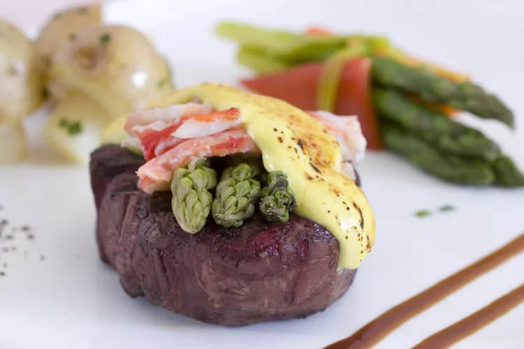

Meet Oscar, the King Of Steak, and the Most Romantic Meal Ever

I adore a good hollandaise and couldn't survive without mayonnaise, but if I had to pick an all-time favorite 'aise, it might just be béarnaise. This tarragon-spiked, shallot-infused hollandaise is absolutely perfect with any and all steaks or roasts, especially lean ones.
Ingredients
- 1 cup fresh tarragon leaves, coarsely chopped
- ½ cup thinly sliced shallots
- 1 teaspoon whole black peppercorns
- ½ cup white wine vinegar
- ½ cup white wine
- ⅓ cup water
Directions
- Place 1 cup of tarragon, shallots, and peppercorns in a saucepan. Pour in white wine vinegar, white wine, and water. Place over medium-high heat and bring to a simmer; stir. Reduce heat to medium-low to maintain a gentle simmer and reduce liquid to about 3 tablespoons, 20 to 30 minutes. Remove from heat. Strain into a bowl through a fine-mesh strainer, pressing tarragon mixture to extract as much liquid as possible.
- For compound butter: Place 1/4 cup chopped tarragon and capers in a mortar. Mash with a pestle for about 1 minute. Add 1 tablespoon of cold butter. Mash and pound with a pestle until ingredients are thoroughly combined in a solid mass. Transfer to a piece of plastic wrap; wrap and chill.
- For béarnaise sauce: Place egg yolks in a stainless steel (flameproof) mixing bowl; add 3 tablespoons tarragon/shallot reduction; whisk together. Add cold butter cubes. Place bowl over low to medium heat whisking constantly until sauce thickens, as you hold the bowl with a kitchen towel. After butter melts continue whisking; mixture will turn a lighter yellow color after 8 to 10 minutes. When mixture is nice and thick, reduce heat to low and stir in compound butter broken into chunks. Continue whisking. Remove from heat. Season with salt, cayenne pepper, and black pepper.